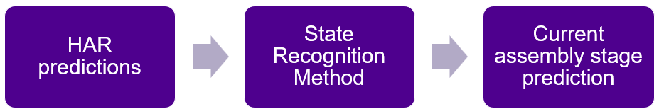

First contribution
Five different tracking methods investigated across two assembly datasets.
CogRob research project
Cognitive Robotics Group · Tampere University, Finland
Accepted to IEEE International Conference on Robot and Human Interactive Communication (RO-MAN) 2026 in Kitakyushu, Fukuoka, Japan.

Abstract
Human Action Recognition (HAR) is frequently investigated in Human-Robot Collaboration (HRC) research to understand what actions have been performed and hence the state of a collaborative task. Accurately tracking an assembly state from HAR is however not fully investigated, and in realistic scenarios is not a trivial task. This research systematically investigates and compares methods for tracking assembly state using action recognition inputs. Investigations using two diverse datasets and five state tracking approaches, including logic-based, Hidden Markov Model (HMM), and neural network (NN) methods, show that optimal approaches are not uniform across different tasks and that different methods fail under different circumstances. Testing is performed using both simulated inputs with varying noise levels and realistic inputs from a HAR model. Results show NN and HMM methods can perform well in tasks with limited variability, but for other scenarios logic-based approaches can be more robust. Methods which model expected action duration are also important for tasks with repeated actions where no additional sensing is provided.
Method
Human action recognition provides imperfect tracking of actions an operator has performed. For accurate decision making in HRC, robust reasoning as to the assembly stages completed is required. Five different methods are investigated for tracking assembly state from action recognition predictions.
Five different tracking methods investigated across two assembly datasets.
Analysis using simulated HAR inputs with varying noise levels.
Further validation using realistic HAR from skeleton based tracking models.
Results
Optimal methods depend heavilt on the task characteristics being investigated. Logic based approaches can be robust for simple tasks but can be complex to develop. HMM are highly robust but fail for repeated actions of the same type. Deep learning methods require significant training data for reliable results.
@inproceedings{fantmale2026robust,
author = {James Fant-Male and Roel Pieters},
title = {Robust Assembly State Reasoning from Action Recognition for Human-Robot Collaboration},
booktitle = {IEEE International Conference on Robot and Human Interactive Communication (RO-MAN) 2026},
pages = {732-739},
year = {2026},
doi = {10.1109/RO-MAN72286.2026.11715009},
}